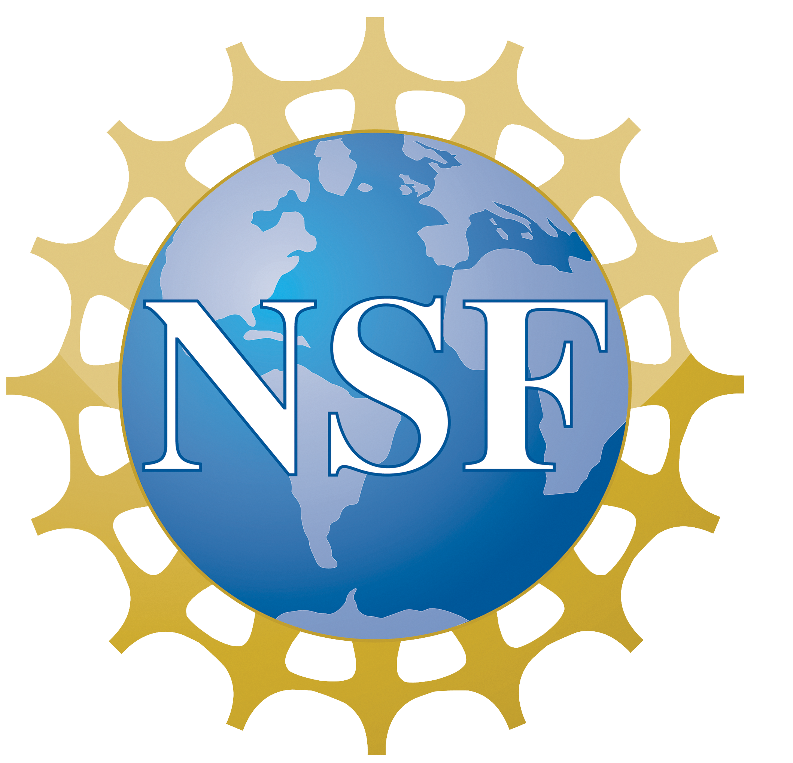

Hello I'm Neel, a junior studying computer engineering at Rutgers University,
with minors in mathematics and computer science.

Work Experience
Software Engineering Fellow
Headstarter AI
Jul 2024 - Present · 1 mo
Remote
Helped me get this job via LinkedIn.
Research Assistant
Aresty Research Center for Undergraduates at Rutgers University
May 2024 - Present · 3 mos
New Brunswick, New Jersey, United States · On-site
1. Developing visualization techniques to analyze multibeam sonar data, enhancing hydrothermal plume identification through grid interpolation and image filtering.
2. Conducting data analysis on backscatter signals to detect and quantify thermal plume characteristics, improving spatial pattern recognition and ocean mixing estimations.
3. Collaborating with a multidisciplinary team to advance underwater acoustic research, integrating data visualization and feature extraction to deepen understanding of marine geothermal activity.
2. Conducting data analysis on backscatter signals to detect and quantify thermal plume characteristics, improving spatial pattern recognition and ocean mixing estimations.
3. Collaborating with a multidisciplinary team to advance underwater acoustic research, integrating data visualization and feature extraction to deepen understanding of marine geothermal activity.
Learning Assistant
Middlesex College
Nov 2023 - Present · 9 mos
Remote
1. Provide individual tutoring for students in career and Technical Education programs, specializing in courses such as Intro to Computer Science, Data Structures, and Calculus I, II, and III.
2. Reinforce class concepts and skills to enhance student understanding and problem-solving abilities.
3. Review study practices and learning strategies to optimize academic performance, having tutored over 450 hours to date.
2. Reinforce class concepts and skills to enhance student understanding and problem-solving abilities.
3. Review study practices and learning strategies to optimize academic performance, having tutored over 450 hours to date.
Student Technical Assistant and Peer Tutor
Middlesex College
Sep 2023 - Dec 2023 · 4 mos
Edison, New Jersey, United States · On-site
1. Room preparation and technical support for computer labs.
2. Troubleshooting lab equipment issues and providing technical assistance.
3. Staffing computer labs, offering support to students, and tutoring in proficient computer science courses.
2. Troubleshooting lab equipment issues and providing technical assistance.
3. Staffing computer labs, offering support to students, and tutoring in proficient computer science courses.
EOF Office Assistant
EOF Office Assistant
Feb 2023 - Aug 2023 · 7 mos
Edison, New Jersey, United States · On-site
Results-driven Office Assistant skilled in problem-solving, technical support, data entry, and public speaking. Proficient in Canva, enhancing organizational efficiency with a diverse skill set.
NSF REU Research Intern
University of Missouri-Columbia
May 2024 - Jul 2024 · 3 mos
Columbia, Missouri, United States · On-site
1. Developing a research paper on Text Analytics Using Online Reviews from TripAdvisor, comparing the effectiveness of two methods: Latent Dirichlet Allocation (LDA) combined with Data Envelopment Analysis (DEA), and Bidirectional Encoder Representations from Transformers (BERT) integrated with DEA, to determine which approach yields more accurate results.
2. Utilizing NLP, Data Science, and Machine Learning to assess the efficiency and accuracy of various text analysis methodologies.
3. Enhancing data modeling with the DEA fuzzy network technique, improving traditional DEA methods by effectively managing data uncertainty and complexity for superior accuracy in sentiment analysis.
4. Employing Aspect-Based Sentiment Analysis (ABSA) to identify sentiment targets and polarity in user reviews, to provide a detailed understanding of feedback nuances beyond conventional sentiment analysis.
2. Utilizing NLP, Data Science, and Machine Learning to assess the efficiency and accuracy of various text analysis methodologies.
3. Enhancing data modeling with the DEA fuzzy network technique, improving traditional DEA methods by effectively managing data uncertainty and complexity for superior accuracy in sentiment analysis.
4. Employing Aspect-Based Sentiment Analysis (ABSA) to identify sentiment targets and polarity in user reviews, to provide a detailed understanding of feedback nuances beyond conventional sentiment analysis.
Project Manager - L'SPACE Mission Concept Academy
NASA - National Aeronautics and Space Administration
Jan 2024 - Apr 2024 · 4 mos
Remote
1. Authored the Preliminary Design Review (PDR) document for the NASA L’SPACE Mission Concept Academy Spring 2024, focused on a Mars exploration mission aimed at finding perchlorates and water bodies.
2. Oversee team operations, including meeting schedules, task assignments, document consistency, and managing task progress, documentation, and requests for changes or extensions, while also handling mentorship, risks, and budgets. Led a team of 15 engineering students.
3. Design the mission vehicle's electrical power system in my secondary role as an Electrical Engineer, including batteries, power generation, and distribution, ensuring seamless integration with other subsystems to meet science objectives and success criteria.
2. Oversee team operations, including meeting schedules, task assignments, document consistency, and managing task progress, documentation, and requests for changes or extensions, while also handling mentorship, risks, and budgets. Led a team of 15 engineering students.
3. Design the mission vehicle's electrical power system in my secondary role as an Electrical Engineer, including batteries, power generation, and distribution, ensuring seamless integration with other subsystems to meet science objectives and success criteria.
Projects


NSF REU Project - Analyzing Online Reviews Using Fuzzy DEA
View ProjectResume & GitHub
Explore my resume and GitHub profile for more details about my work and projects:
Download Resume | GitHub ProfileContact Me
Feel free to reach out to me through the following links:
Email | LinkedIn